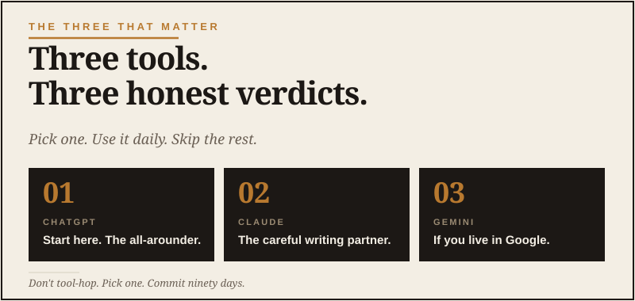

Here’s the honest truth: if you’re in your 40s, 50s, or early 60s, AI can feel like somebody changed the rules while you were busy living an actual life.
You’ve built a career, raised kids, handled pressure, paid bills, led people, fixed problems, and made decisions without needing a chatbot sitting next to you. So when every headline says AI is going to change everything, it’s fair to ask: Okay, but what do I actually do with it?
I’ll be honest: that was my first question too. I’m a retired Navy Master Chief, a husband, a dad, and I run a YouTube channel about backcountry travel. I already had plenty of tools, apps, cameras, checklists, and little digital gremlins asking for updates. I was not looking for another full-time job.
The answer is not “learn prompt engineering.” The answer is not “subscribe to 14 tools.” The answer is this: start using AI as a practical assistant for the things you already do.
Do not start with tools. Start with friction.
Most people get AI wrong because they start by asking which app is best. ChatGPT? Claude? Gemini? Perplexity? Something new that launched yesterday with a name that sounds like a prescription medication?
Wrong first question.
The better question is: Where am I wasting time, avoiding decisions, or staring at a blank page?
For me, that might be outlining a video, sorting through travel options, writing an email I’ve been avoiding, or making sense of some document that was clearly written by a committee trying to punish the reader.
That’s where AI earns its keep.
- Planning a trip and comparing routes.
- Researching a major purchase.
- Writing an email you’ve been putting off.
- Understanding a confusing document.
- Getting unstuck on a business idea.
- Organizing notes from a meeting or project.
- Learning a topic without drowning in search results.
Your first week with AI
For seven days, use one AI tool for one real task per day. Don’t chase features. Don’t watch five more YouTube videos. Use it. I say that as someone who has watched plenty of “research” videos and then somehow ended up comparing camp stoves for forty minutes. We are not doing that here.
Day 1: Explain something
Day 2: Compare a decision
Day 3: Draft the email
Day 4: Build a plan
Day 5: Challenge your idea
Day 6: Understand the confusing thing
Pick a document that's been sitting on your desk because you don't have the patience for it. An insurance letter. A homeowners' association notice. A medical report. The fine print on a financial offer.
Day 7: Have a real conversation
This is the day that surprises most men. Pick something you've been turning over in your head for a while — a decision, a worry, a half-formed idea — and just talk to it. Not for the answer. For the act of thinking out loud with something that doesn't get tired and doesn't have an agenda.

The goal is leverage, not magic
AI is not there to make you helpless. It's there to give you leverage. It can help you think through a problem faster, see options you missed, and turn rough thoughts into something usable. It can read a forty-page PDF in two seconds. It can write a competent first draft of almost anything. It can challenge your assumptions without getting offended.
What it can't do is bring the judgment. That's the part the 25-year-old hype videos usually miss. After 26 years in the Navy, I learned to be suspicious of confident answers that haven’t been checked against reality. AI can sound very sure of itself while being absolutely wrong. So can people, by the way, but people usually don’t do it in perfect bullet points.
Experience matters more with AI, not less, because somebody still has to know whether the answer makes sense. The guy who's bought three houses, been in the room for a hundred negotiations, raised a couple of kids, and managed people through hard situations — that guy is going to get more value out of AI in a week than a 22-year-old will get in a year. The AI gives you speed. You give the AI judgment. The combination is unfair.
What you'll notice after a week.
If you actually do the seven days above, three things will happen.
One, the awkwardness goes away. The first day or two of using AI feels weird because you're talking to a thing. By day five, it just feels like a tool, like email or a calculator. You stop overthinking it.
Two, you'll find one or two uses that genuinely earn it a spot in your week. For some men it's the writing. For some it's the research. For some it's having something patient to think out loud with at 5 a.m. when nobody else is up. You don't have to use it for everything. Pick the two or three things where it earns its keep, and use it for those.
Three, the doom and the hype both quiet down. When you've actually used the thing, the shrill voices on either side stop having so much pull. You'll notice it's neither the apocalypse nor the second coming. It's a useful tool that's getting better. That's it.
The rule for grown men.
Use AI like a sharp junior assistant with a strong engine and no life experience. It can draft, sort, compare, summarize, brainstorm, and read things you don't have time for. You decide.
That's the lane. Not fear. Not hype. Just a new tool on the bench, ready when you reach for it.
If it helps, keep it. If it doesn’t, don’t make a religion out of it. I like tools that prove their value. AI should have to earn a spot in your life like anything else.
Pick a tool. Pick a task. Try it this week. That's the whole job.